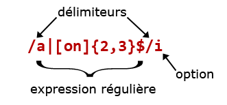

Il est possible de modifier le comportement d'une expression régulière en utilisant des options (ou modificateurs) qui se placent après le délimiteur de fin de modèle.
Les options peuvent être multiples : il suffit de les indiquer les unes à la suite des autres, sans aucun sépérateur.

Quelques options :
Cette option force l'expression régulière à ne pas tenir compte des différences majuscules/ minuscules dans sa recherche ou son remplacement.
Soit le texte "Les expressions réguliéres sont LES armes de la Force
et brisent leS chaînes".
Si nous voulons récupèrer tous les "les",
nous aurons l'expression :
/\bles\b/i
Nous avons vu que le point (.) est un "joker" qui remplace n'importe quel caractère ... sauf le saut de ligne. Si vous travaillez sur des chaînes qui peuvent contenir des sauts de ligne, vos expressions régulières utilisant le point (.) risquent de ne pas fonctionner correctement.
Dans l'exemple suivant, nous voulons récupérer le contenu
de tous les éléments li présents dans une page HTML.
Plusieurs éléments li peuvent être sur une même ligne.
De même, le contenu d'un élément li peut être écrit sur plusieurs
lignes. Cela ne posera aucun problème de rendu pour le navigateur.
Par contre notre expression régulière ne fonctionnera
pas tant que nous n'aurons pas ajouté l'option s, et que nous n'aurons
pas spécifié que le quantificateur * n'est pas gourmand.
Pour bien voir la différence, enlevez l'option s de l'expression
régulière ou le point d'interrogation ? .
Les assertions de début et fin de chaîne (^ et $) sont très
interressantes car elles accélèrent beaucoup le traitement
des expressions régulières. Pourtant quand la chaîne à traiter est
multiligne, ce qui peut arriver quand on traite des données contenues dans des fichiers,
l'ancrage ^ se trouvera avant le premier caractère de la
chaîne (i.e. au début de la première ligne du fichier), et l'ancrage $ se
trouvera à la fin de la chaîne (i.e. à la fin de la dernière ligne
du fichier). Les assertions ^ et $ ne nous seront alors, en l'état, pas d'une grande
utilité.
Imaginons un fichier exporté à partir d'Excel (ou de n'importe quel logiciel qui fasse de l'export CSV - Comma Separated Value). Le fichier contient une liste de livres (oui, ayant trait à Star Wars, mais comment avez-vous deviné ?). Chaque ligne du fichier est composée de 4 champs séparés par des point-virgules(;) : un numéro, un nom de série, un titre, un auteur.
1042;ACADEMIE JEDI;1 LA QUETE DES JEDI;KEVIN J. ANDERSON
1043;ACADEMIE JEDI;2 SOMBRE DISCIPLE;KEVIN J. ANDERSON
1044;ACADEMIE JEDI;3 LES CHAMPIONS DE LA FORCE;KEVIN J. ANDERSON
1013;FILM;EPISODE I : LA MENACE FANTOME;TERRY BROOKS
1014;EPISODE I : JOURNAL;AMIDALA;JUDE WATSON
1015;EPISODE I
: JOURNAL;PLANETE REBELLE;GREG BEAR
1016;FILM;EPISODE II :
L'ATTAQUE DES CLONES;R.A. SALVATORE
1017;FILM;EPISODE II
(VERSION JUNIOR);PATRICIA C. WREDE
1022;FILM;EPISODE IV :
UN NOUVEL ESPOIR;GEORGE LUCAS
1023;FILM;EPISODE V :
L'EMPIRE CONTRE-ATTAQUE;DONALD F. GLUT
1024;FILM;LES OMBRES
DE L'EMPIRE;STEVE PERRY
1025;FILM;EPISODE VI : LE RETOUR DU
JEDI;JAMES KAHN
1038;LE JEDI FOU;1 L'HERITIER DE
L'EMPIRE;TIMOTHY ZAHN
1039;LE JEDI FOU;2 LA BATAILLE DES
JEDI;TIMOTHY ZAHN
1040;LE JEDI FOU;3 L'ULTIME
COMMANDEMENT;TIMOTHY ZAHN
1045;-;LES ENFANTS DU
JEDI;BARBARA HAMBLY
1046;-;LE SABRE NOIR;KEVIN J. ANDERSON
1047;-;LA PLANETE DU CREPUSCULE;BARBARA HAMBLY
1059;JEUNES
CHEVALIERS JEDI;1 LES ENFANTS DE LA FORCE;ANDERSON
1060;JEUNES CHEVALIERS JEDI;2 LES CADETS DE L'OMBRE;ANDERSON
1061;LES JEUNES CHEVALIERS JEDI;3 GENERATION PERDUE;ANDERSON
1062;JEUNES CHEVALIERS JEDI;4 LES SABRES DE LUMIERE;ANDERSON
1063;JEUNES CHEVALIERS JEDI;5 LE CHEVALIER DE LA NUIT;ANDERSON
1076;LES AGENTS DU CHAOS;1 LA COLERE DU HEROS;JAMES LUCENO
1077;LES AGENTS DU CHAOS;2 L'ECLIPSE DES JEDI;JAMES LUCENO
Si nous voulons rechercher les lignes dont le champ titre contient
le mot JEDI, nous pourrions utiliser l'expression régulière :
/^\d+;[^;]+;[^;]*JEDI[^;]*;.*/
Mais l'ancrage ^ en début d'expression correspond ici uniquement au début de la
première ligne, et donc ce modèle ne permet de rechercher le mot JEDI que dans
le troisième champ de la première ligne.
Si nous
ajoutons l'option m à l'expression :
/^\d+;[^;]+;[^;]*JEDI[^;]*;.*/m
nous demandons que
l'assertion ^ soit vraie à chaque début de ligne.
En ajoutant l'option m, nous trouvons bien les 5 lignes contenant le mot JEDI dans le champ titre.
Vous le savez déjà, les options peuvent être cumulées. Par exemple, nous
pourrions ajouter l'option i pour ignorer la casse et avoir
l'expression régulière suivante :
/^\d+;[^;]+;[^;]*jedi[^;]*;.*/mi
Nous avons vu précédemment comment rendre un quantificateur non gourmand. L'option U (U majuscule - Ungreedy) rend tous les quantificateurs d'une expression non gourmands.
/<a href=".+?">.*?<\/a>/s
et
/<a
href=".+">.*<\/a>/sU
sont équivalentes.
Avec l'option x, tous les caractères d'espacement sont ignorés, sauf
s'ils sont dans une classe ou s'ils sont échappés. Tous les caractères après un
# (non echappé et en dehors d'une classe) sont ignorés jusqu'à une
nouvelle ligne.
En clair, l'option x permet de mettre des
commentaires dans une expression régulière :
/^\d+;[^;]+;[^;]*JEDI[^;]*;.*/m
est équivalent à :
/ # Délimiteur de l'expression
^ # ancrage de début de ligne (car option m)
\d+ # un ou plusieurs chiffres décimaux
; # un caractère littéral ;
[^;]+ # un ou plusieurs caractères qui ne peuvent pas
# être un ;
; # un caractère littéral ;
[^;]* # 0 ou plusieurs caractères qui ne peuvent pas
# être un ;
JEDI # chaîne littérale JEDI
[^;]* # 0 ou plusieurs caractères qui ne peuvent pas
# être un ;
; # un caractère littéral ;
.* # 0 ou plusieurs caractères qui ne peuvent pas
# être un saut de ligne
/mx